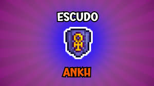

Escudo de Ankh (Ankh Shield)
Postado em por Equipe Wiki.
Descrição Geral

O Escudo de Ankh é um acessório do Modo Difícil (Hardmode) que combina as propriedades de vários outros acessórios, oferecendo ao jogador imunidade a 11 debuffs diferentes, além de proteção contra recuo.
"O acessório definitivo para quem deseja explorar as selvas e masmorras sem ser interrompido por condições adversas." — Guia de Estratégia do Terraria
Árvore de Criação
Para fabricar este item, o jogador precisará de uma Oficina de Engenheiro e dos seguintes componentes principais:
- Obsidian Shield (Escudo de Obsidiana)
- Ankh Charm (Amuleto de Ankh)
- Reforço de blindagem
- Curativo medicado
- O Plano
- Mantra Contra-maldição
- Sombras refletoras
Tabela de Materiais e Efeitos
| Item Intermediário | Ingredientes (A + B) | Imunidade Concedida |
|---|---|---|
| Reforço de blindagem | Vitamina + polimento de Armadura | Fraqueza e Armadura Quebrada |
| Curativo medicado | Bezoar + curativo adesivo | Veneno e Sangramento |
| O Plano | Relógio rápido + Mapa tríptico | Lentidão e Confusão |
| Mantra Contra-maldição | Megafone + Nazar | Silêncio e Maldição |
| Sombras refletoras | Vendas nos olhos + Espelho de bolso | Escuridão e Petrificação |
| Amuleto ankh | Os 5 itens acima combinados | Todas as imunidades acima |
| Escudo ankh | Amuleto Ankh + Escudo de obsidiana | Imunidade total + Proteção contra recuo |
Lista Completa de Imunidades
Ao equipar o Escudo de Ankh, você se torna imune aos seguintes efeitos:
- Sangramento
- Quebra de Armadura
- Confusão
- Maldição
- Escuridão
- Lentidão
- Fraqueza
- Veneno
- Silêncio
- Pedra (Stoned)
- Fogo de Obsidiana